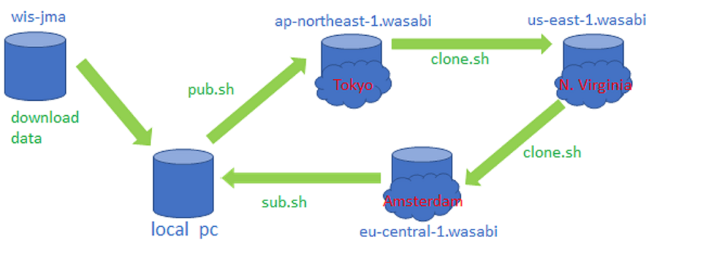
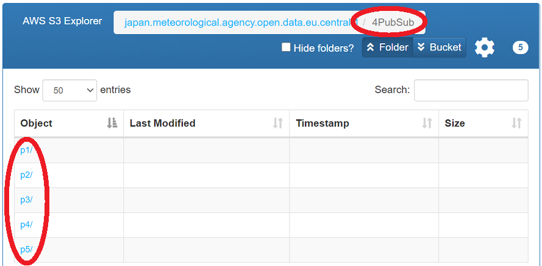
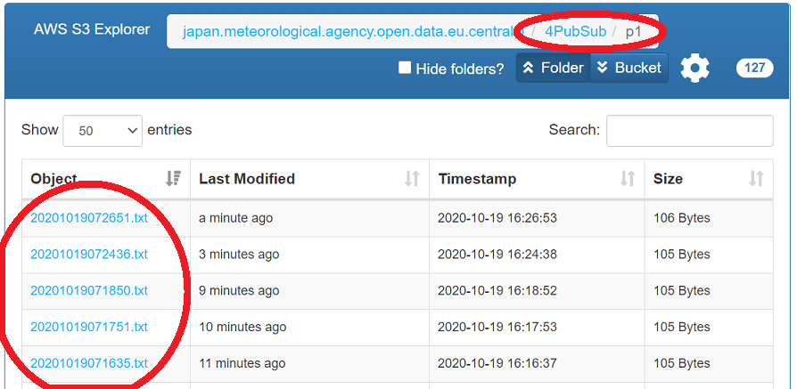
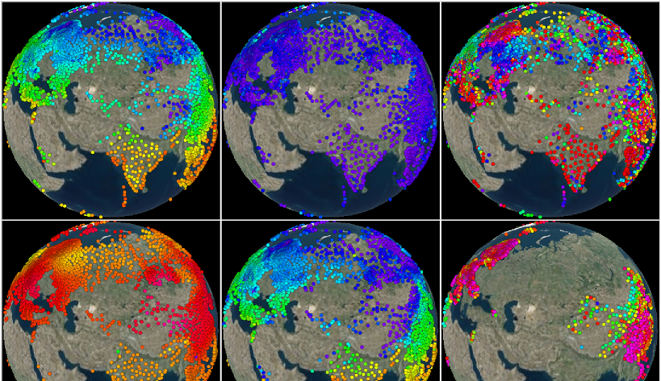

Tokyo cloud project
1. Publish/Subscribe/Clone on cloud (not using MQPs)
1.1 Evaluation
Publish/Subscribe/Clone on cloud (not using MQPs) has been being evaluated by using the following resources.
The diagram of the data flow to evaluate Publish/Subscribe/Clone on cloud is as follows:

The data files published/cloned in each region can be explorered by using the following aws-js-s3-explorers.
The data files are classified by the following priority and classification.
| priority | classification |
| p1 | warning |
| p2 | Alphanumeric/CREX/IWXXM |
| p3 | BUFR(not satellite) |
| p4 | satellite(BUFR/HDF5) |
| p5 | GRIB |
The prioritized and classified data files are indexed in the "4PubSub" directory. The directory of '4PubSub' is as follows by using the above aws-js-s3-explorer.
There are priority directories of "p1", "p2", "p3", "p4" and "p5" in the directory of "4PubSub" as follows.

There are index files with the file name of the created datetime in each priority directories as follows.

The index file is a list of links to the created data files as follows.
In this evaluation, all GTS data files are published/subscribed/cloned using the '4PubSub' directory without MQPs.
The average/maximum transfer time of the prioritized and classified data files are as follows.
| priority | average transfer time(2020/10/21) (local PC -> ap-northeast -> us-east -> eu-central) | maximum transfer time(2020/10/21) (local PC -> ap-northeast -> us-east -> eu-central) | The number of open data files(2020/10/22) | The number of parallel transfers |
| p1 | 35s | 68s | 405 | 4 |
| p2 | 3m5s | 3m47s | 31655 | 8 |
| p3 | 3m5s | 4m0s | 35074 | 16 |
| p4 | 3m19s | 18m7s | 155355 | 64 |
| p5 | 15m30s | 29m1s | 47763 | 32 |
1.2 How to publish/subscribe/clone on cloud
1.2.1 Install rclone
Reference
curl https://rclone.org/install.sh | sudo bash
1.2.2 Configure rclone
vi $HOME/.config/rclone/rclone.conf
[wasabi]
type = s3
env_auth = false
access_key_id =
secret_access_key =
region =
endpoint = https://s3.ap-northeast-1.wasabisys.com
location_constraint =
acl = public-read
server_side_encryption =
storage_class =
[wasabi_us]
type = s3
env_auth = false
access_key_id =
secret_access_key =
region =
endpoint = https://s3.us-east-1.wasabisys.com
location_constraint =
acl = public-read
server_side_encryption =
storage_class =
[wasabi_eu]
type = s3
env_auth = false
access_key_id =
secret_access_key =
region =
endpoint = https://s3.eu-central-1.wasabisys.com
location_constraint =
acl = public-read
server_side_encryption =
storage_class =
:wq
1.2.3 Install pub.sh/sub.sh/clone.sh
1.2.4 Configure Cron
The configuration of the Cron to subscribe p3 data files are as follows:
crontab -e
* * * * * /path_to_sh/sub.sh --cron cache wasabi_open_data_p3 wasabi japan.meteorological.agency.open.data p3 16
:wq
1.3 Cost
2. Monitor on cloud and Dataset API
2.1 Monitor on cloud
Monitor on cloud is
here.

2.2 Dataset API
Dataset API is
here. Dataset API is being evaludated.
2.3 Cost
3. manual on cloud
3.1 Publish/Subscribe/Clone (not using MQPs)
3.1 publish to cloud
A reference implementation is
pub.sh.
The protocol to publish is as follows.
- upload data files.
- upload a file of a list of the uploaded data files to the directory of "4PubSub/p[1-9]". The name of the file is YYYYMMDDHHMMSS.txt.
3.2 subscribe from cloud
A reference implementation is
sub.sh.
The protocol to subscribe is as follows.
- download a current list of the index files in "4PubSub/p[1-9]"
- get the newly created list of the index files by comparing the previous list with the current list.
- download newly created index files from the directory of "4PubSub/p[1-9] ".
- download data files that are linked in each index files.
3.3 clone cloud to cloud
The protocol to clone is as follows.
- download a current list of the index files in "4PubSub/p[1-9]"
- get the newly created list of the index files by comparing the previous list with the current list.
- download newly created index files from the directory of "4PubSub/p[1-9] ".
- copy data files that are linked in each index files from source cloud to destination cloud.
- upload a file of a list of the copied data files to the directory of "4PubSub/p[1-9]". The name of the file is YYYYMMDDHHMMSS.txt.
3.4 directory name convention
To publish data files on cloud, directory name convention is needed.
The directory name convention is as follows.
- [bucket]/[indicator]/[format]/[category]/[subcategory]/[year+month+day+hour+minute]/
- Directory names above are all lowercase.
- [bucket] is bucket of cloud storage.
- [indicator] is location indicator.
- [format] is 'alphanumeric' or 'bufr' or 'crex' or 'grib' or .
- q
- not finished yet